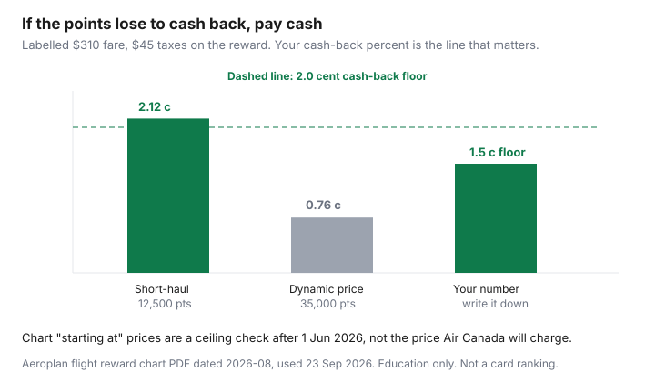

Travel · Canada
Aeroplan vs Paying Cash: A Simple cpp Framework for Canadian Households
Points feel free at checkout, which is how a household spends 35,000 of them on a fare that was $310. The cash price was the real price. The points price was a bad trade against a card that simply pays a percent.
This is arithmetic and a chart check. It is not a card ranking, not a sweet-spot scavenger hunt, and not a prediction of the next devaluation. If you have not chosen a program yet, start with Scene+ versus Aeroplan. Scene+ is a fixed penny. Aeroplan has to earn its complexity on the fare in front of you.
Disclosure: Travel-rewards education is an offer type. Saving Optimizer may earn a commission if we later add partner links. We do not claim an Aeroplan or Air Canada partnership. This page does not rank credit cards. Chart figures were read from Air Canada’s June 2026 reward-chart update and the August 2026 chart PDF on 23 Sep 2026.
Key takeaways
- Pick one method and keep it: cents per point = (all-in cash fare − taxes and fees you still pay on the reward) ÷ points. Dividing the whole cash fare by points, and ignoring reward taxes, makes the points look richer than they are.
- The published chart’s “starting at” numbers, for tickets booked or reissued on or after 1 June 2026, are a floor to beat, not a price Air Canada will honour on a dynamic seat.
- Short-haul Canada and U.S. economy is where the chart still starts low (from 6,000 points one-way under 500 miles on the August 2026 chart). Long-haul partner business is where June 2026 increases and fuel surcharges trap people.
- A dynamic price far above the chart floor, or any price under your cash-back percent, is a cash ticket.
- A stopover or partner route helps only when you wanted the stop and the taxes stay sane. Do not manufacture a connection to inflate the math.
- If cpp is below your cash-back alternative, buy the ticket. One cent is the floor if you have no cash-back card at all.
Calculate cents per point: (cash fare taxes excluded or included—pick one method) ÷ points
Use one formula and write it on the sheet so next month’s redemption uses the same ruler.
Preferred method (taxes excluded): take the all-in cash price of the same ticket, subtract the taxes and fees the reward booking still charges, divide by the points, and multiply by 100 if you want cents. Those leftover taxes are money you pay either way, so they are not value the points created.
The method to avoid: cash fare ÷ points, with reward taxes ignored. That inflates the result. On the labelled fare below it would turn a 2.12-cent redemption into a fake 2.5 cents ($310 ÷ 12,500).
| Points asked | Value the points bought | Cents per point | Versus a 2% cash-back alternative |
|---|---|---|---|
| 12,500 | $265 | 2.12 | Points win, if you will use them |
| 25,000 | $265 | 1.06 | Loses to 2%. Beats a 1% card. Close to Scene+ at 1 cent. |
| 35,000 | $265 | 0.76 | Buy the ticket. The points are worth less than a penny. |

Your cash-back alternative is the percent you actually earn on a card you pay in full, on spend you would have put on an Aeroplan card instead. If you do not have that number, use 1.0 cent as the household floor, because that is what a fixed portal such as Scene+ pays. Anything under the floor is a donation to the airline.
Use the published reward chart as a ceiling check after June 2026 changes
Air Canada’s flight reward chart changed for tickets booked or reissued on or after 1 June 2026. The public chart is still a distance-and-zone table with “starting at” prices. Air Canada and several partners (the chart’s select-partner list includes United, Emirates, Flydubai, Etihad, and a set of Canadian regionals) also sell dynamic prices that begin at those floors and go up. “Starting at” is the best published case, not the Tuesday you need.
Use the floor as a ceiling check on your enthusiasm. If a dynamic economy seat asks two or three times the starting-at figure for that distance, you are not in the good version of the chart, even when a very expensive cash fare makes the cents look acceptable. Do not redeem a huge balance against a cash fare you would never have paid.
Within North America, the August 2026 chart PDF shows these one-way economy “starting at” figures for Air Canada and select partners: 6,000 points (0–500 miles), 10,000 (501–1,500), 12,500 (1,501–2,750), and 17,500 (2,751+). Other partners match those floors in the shorter bands and start at 22,500 economy beyond 2,751 miles. Between North America and the Atlantic zone, Air Canada’s June 2026 note moved the 0–4,000 mile economy floor from 35,000 to 32,500 points. Several longer Atlantic bands went up, including partner first class. Read the PDF dated on the file you open. Median prices printed on the chart, where Air Canada shows them, sit above the floor. Expect the median, not the poster.
Sweet spots: short-haul Canada/US economy vs long-haul partner traps
The redemption that still fits a household calendar is short-haul economy inside Canada and to the U.S.: a 6,000- or 10,000-point one-way when the cash fare is a few hundred dollars and the taxes on the reward are modest. That is the 2-cent neighbourhood in the table, and it does not require a partner first-class hobby.
The trap is a long-haul partner award that looks lavish and prices like a bad trade. June 2026 raised many Atlantic business and first floors (Air Canada’s note: 4,001–6,000 mile business from 70,000 to 75,000; partner first in that band from 100,000 to 120,000; longer bands up as well, with partner first beyond 8,000 miles from 140,000 to 165,000). Partner awards can add a booking fee. Some partners still come with carrier surcharges that show up in the “taxes and fees” line and crush the cents-per-point result. If the fees line is large, rerun the formula. A beautiful cabin with a $700 surcharge on a fare you could have bought in economy for $900 is not a household win unless you sat down and chose the cabin on purpose.
Premium cabins are optional. This framework does not chase them. If economy cash is reasonable and the business award is a stretch of the chart, buy economy and keep the points for a short-haul you will actually take.
Dynamic pricing pitfalls and when cash + earn beats a bad redemption
Dynamic pricing is the search result that says 35,000 points on a route whose chart floor is 10,000 or 12,500. Peak weeks, last seats, and Air Canada’s own flights do this. The cents fall under 1, as in the table. Cash plus ongoing earn is the better trade: you pay $310, you keep 35,000 points, and the card you pay with still earns whatever percent you actually get.
Buy cash when any of these is true:
- Cents per point are under your cash-back alternative.
- The points price is a multiple of the chart’s starting-at figure and the cash fare is ordinary.
- The only seat is at a time you would not choose if you were paying money.
- You would carry a card balance to “save” the points. Interest wins that argument every time.
Redeem when the cents clear the floor, the schedule is one you would buy, and the taxes line is not a second fare. Then stop searching. A slightly better seat tomorrow is how people miss the trip.
Stopovers and partner routing that raise value without chasing premium cabin flex
A stop or a partner connection raises the value of a redemption only when the extra city is a place you meant to be, and the added taxes and time are acceptable. An open-jaw or a stop you already planned in cash can make one reward do two jobs. A 20-hour connection built to juice a spreadsheet does not. You pay the time either way.
Aeroplan’s stopover and routing rules have changed before and can include fees. Do not budget from a 2022 blog. Open the current award rules the week you book and price the stop both ways: with it, and as two simpler tickets (one on points, one on cash). If the simpler pair has higher cents per point and a human schedule, take the simpler pair. Partner routing is a tool. Premium-cabin flexibility — mixed cabins, positioning flights, and a second airport you do not live near — is how this becomes a second job. The household version is one reasonable route in economy or a cabin you deliberately chose.
Household rule: if cpp < your cash-back alternative, buy the ticket
Write the rule where the booking happens: if cents per point are below the cash-back alternative, buy the ticket. Substitute 1.0 cent if the alternative is “no rewards card” or Scene+ travel. Do not round a 0.9 up because the points were “already sitting there.” Sitting there is an option. Spending them on a bad fare deletes the option.
Two adults should use the same formula. One person hunting a 4-cent business award and the other buying random domestic seats at under a cent will empty the account on the random seats. Agree the floor. Redeem short-haul when it clears. Pay cash when it does not. The booking window for that cash fare is the other guide: when to book from Canada. Points do not exempt you from bag fees on a paid ticket, and a reward ticket still needs the medical decision on the Insurance travel-medical page if you are leaving the province.
Sources & date stamps
- Air Canada, “An update on the Aeroplan Flight Reward Chart” — changes apply to tickets booked or reissued on or after 1 June 2026, including North America–Atlantic economy 35,000 to 32,500 points in the 0–4,000 mile band and the increases cited in the text. Used 23 Sep 2026.
- Air Canada flight reward chart PDF marked 2026-08 — within-North-America economy starting-at amounts (6,000 / 10,000 / 12,500 / 17,500) and the note that starting-at prices are not guaranteed. Used 23 Sep 2026.
- Labelled $310 / $45 / 12,500 arithmetic on this page is an illustration, not a published fare.
Frequently asked questions
How do I calculate Aeroplan cents per point?
Subtract the taxes and fees you still pay on the reward from the all-in cash price of the same ticket, then divide by the points. A $310 fare with $45 of reward taxes at 12,500 points is (310 − 45) ÷ 12,500 = 2.12 cents. Do not divide $310 by the points and ignore the $45. That inflates the result.
What changed in June 2026?
The flight reward chart for bookings or reissues on or after 1 June 2026. Some floors fell (North America–Atlantic economy under 4,000 miles, 35,000 to 32,500). Many business and partner first-class floors rose. Dynamic Air Canada prices still sit at or above the “starting at” figure. Read the current PDF.
What is a good cents-per-point number?
Better than the cash back you would earn instead, on a card you pay in full. If that number is 2%, a 0.8-cent redemption loses. If you have no cash-back alternative, use 1 cent, which is what a fixed program such as Scene+ travel pays. Short-haul economy is where the chart floor still makes the higher numbers realistic.
Should I redeem when the cash fare is very high?
Only if you would have paid that cash fare, and the points price is not a wild multiple of the chart floor. A terrible cash fare can make a bloated award look brilliant. Compare with a normal date, not only with Christmas week.
Do stopovers make every award better?
No. They help when you wanted the extra city and the taxes stay reasonable. Check current Aeroplan rules and fees the week you book. A connection you built for the spreadsheet is a worse trip.